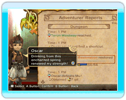

● Je veux rester debout mais Chime m'envoie me coucher à la tombée de la nuit !
 Si vous améliorez suffisamment le moral de vos sujets et que les familles sont heureuses, elles placeront des lumières sous leur porche, vous permettant de rester dehors plus tard.
Si vous améliorez suffisamment le moral de vos sujets et que les familles sont heureuses, elles placeront des lumières sous leur porche, vous permettant de rester dehors plus tard.
● Les "special sales" (ventes spéciales), qu'est-ce que c'est ?
Lorsque les ventes des magasins atteignent un certain niveau, ceux-ci organisent des ventes spéciales, au cours desquelles ils vendent certains objets rares. Les magasins concernés sont aisément reconnaissables aux décorations voyantes placées à l'entrée.
● Les "holidays" (jours fériés), qu'est-ce que c'est ?
Les jours fériés permettent aux aventuriers de se reposer de leurs expéditions dans les donjons. Les plus fatigués peuvent ainsi rester chez eux et seront plus efficaces dans leurs explorations du lendemain. À cette occasion, le roi porte également des vêtements de fête, provoquant des réactions différentes chez ses sujets.

Remarque : aucun ordre supplémentaire ne peut être passé les jours fériés.
● Je veux construire plus de bâtiments, mais je n'ai jamais assez d'elementite.
Pensez à inclure un voleur avec la compétence "Keen Eyes" (Regard perçant) dans une équipe d'aventuriers. Cette compétence augmente sensiblement la quantité d'elementite découverte dans les donjons. Attention ! Pour pouvoir attribuer le métier de voleur ("thief") à un aventurier, vous devez d'abord construire une salle de jeux ("gaming hall").
● Il me faut plus de gils !
Les revenus sont directement liés au nombre de sujets dans votre royaume, et les grandes maisons ("spacious houses") attirent plus de monde que les petites. Les familles heureuses s'acquittent aussi plus volontiers de dîmes importantes.
● Comment faire pour accroître le nombre d'aventuriers ?
En développant le royaume, vous pourrez faire construire plusieurs maisons des corporations ("guild halls"). En leur attribuant ensuite des fonds, vous pourrez augmenter le nombre d'aventuriers en activité.
● Ce donjon est impossible à terminer !
Prenez le temps de lire attentivement les rapports des aventuriers. Ils contiennent peut-être des indices sur la manière de terminer les donjons.

Si vos aventuriers ont du mal à venir à bout du "boss" d'un donjon, pensez à augmenter le taux d'exploration de ce dernier. Les raccourcis et les fontaines de récupération cachés dans le donjon permettront à vos aventuriers d'affronter ce boss avec de meilleures chances de succès.